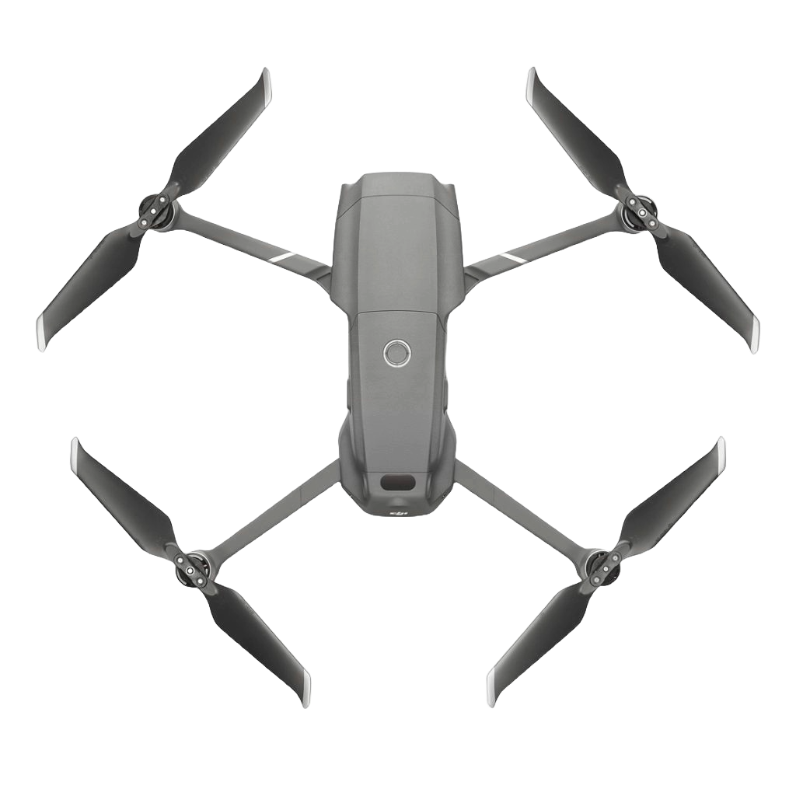
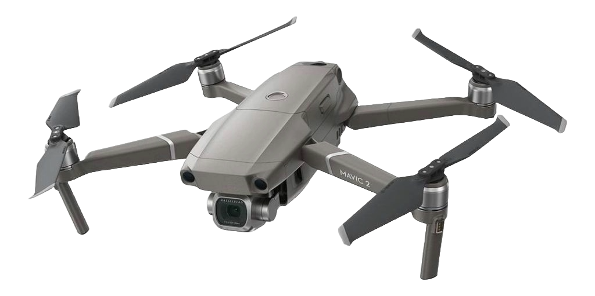
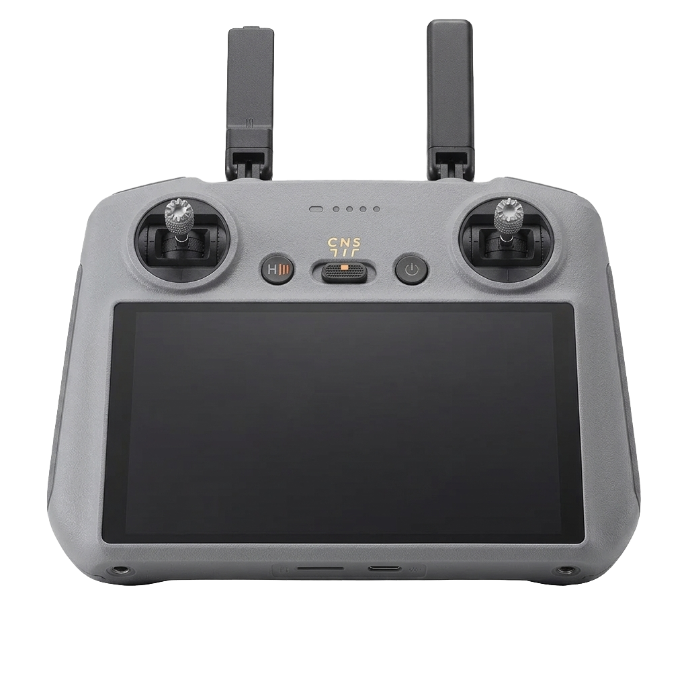

Parte da estrutura principal do chassi, construída em polímero reforçado ou fibra de carbono.
Motores elétricos de alta eficiência magnética.
Conjunto de células de polímero de lítio com um sistema de gerenciamento (BMS) integrado.
Lâminas aerodinâmicas com design de ponta curvada.

Dispositivo de captura de imagem de alta resolução com óptica profissional.
Estabilização 3-eixos. Um sistema de suporte mecânico motorizado.
Transmissores e receptores de rádio integrados (geralmente nos suportes de pouso).
Indicadores luminosos de alta intensidade (LEDs coloridos).
PAINEL DE COMANDOS

JOYSTICK ESQUERDO (ANALOGICO ESQUERDO)
ESTACIONÁRIO
JOYSTICK DIREITO (ANALOGICO DIREITO)
ESTACIONÁRIO
CHECKLIST PRÉ-VOO
✨ MEU LIVRO DE COLORIR: MINI DRONES! ✨
Clique na capa para abrir e ver todas as páginas!
Pinte as 12 páginas do manual e torne-se um mestre piloto!